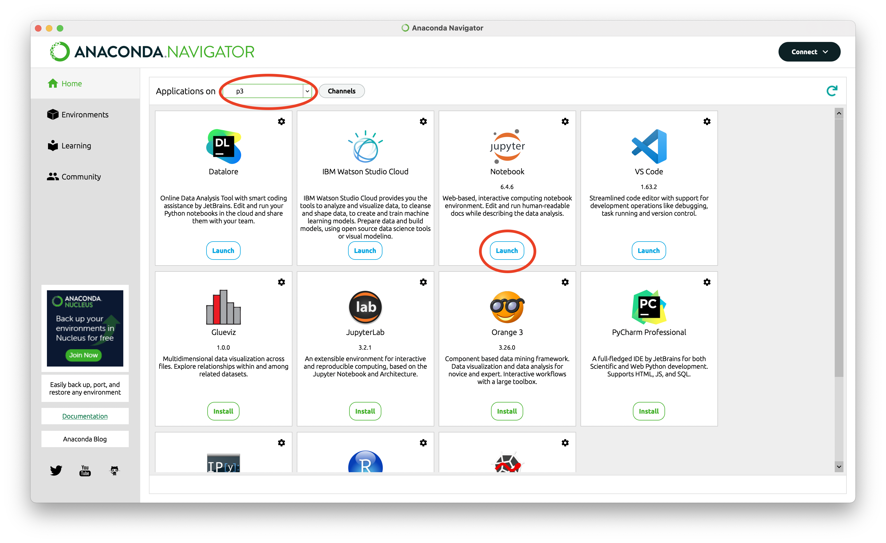
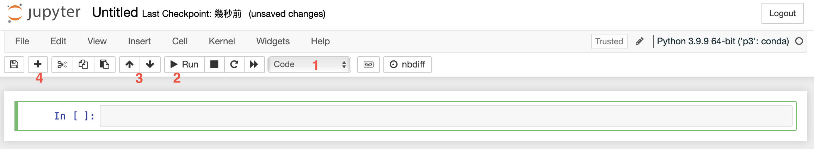
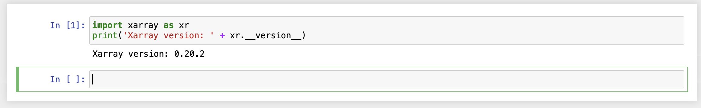

電腦環境設置與Python安裝¶
本篇教學如何在Mac安裝Python，以及管理Python套件和環境。如果使用LCCS實驗室主機64，請使用預設的Mt conda環境。如果想在自己電腦上安裝Python，請參考本篇方法。這裡提供的方法是筆者慣用的方法，非絕對，使用者可參考自己的需求而調整。
X11 Window¶
X11是一種以點陣圖方式顯示的軟體視窗系統。Python執行的過程中因為會產出圖，可以利用X11視窗即時檢視繪圖結果。在Mac上，請安裝XQuartz來使用X11視窗，安裝網址為https://www.xquartz.org。
Anaconda¶
Anaconda 是常用的Python套件管理軟體，優點是擁有大量的Python套件，且容易安裝和學習。請先點選 Anaconda官方網站，選Get Started → Download Anaconda installers，然後安裝在電腦中。
安裝好Anaconda後，打開終端機 (啟動台 → 其他 → 終端機)，這時會發現多了(base)字樣，這是因為Anaconda會自動安裝一些基本套件，這個套件環境預設稱為base。
然而base不能滿足我們進行PyAOS運算的環境，因此要額外安裝套件。接下來我們安裝PyAOS需要的套件，請將以下指令複製到終端機並執行：
conda create -n p3 -c conda-forge ipython numpy metpy scipy netCDF4 matplotlib eofs cartopy nco cdo python-cdo xarray pandas seaborn cmaps scikit-learn rpy2 jupyterlab dask windspharm bottleneck python=3.9
p3是這個新的conda環境的名稱，也可以自己取新的名稱。
安裝成功後，在終端機執行
conda activate p3
就可以開始使用新的conda環境了。
再打開Anaconda軟體，選Environments → p3，就可以看到剛安裝好的環境了。

執行Python¶
打開終端機，將conda環境切換到新安裝好的p3，並執行
ipython
就會跳出Python互動式介面。輸入以下指令並執行看看。
print('Hello World!')
Hello World!
用Visual Studio Code撰寫程式¶
撰寫Python程式，按照檔名可區分為
.py：屬於Python程式的scipt，也就是把完整的程式寫好了以後，由Python逐行執行。.ipynb：為Jupyter Notebook的格式，是互動式的程式介面。
而工具的部分也有很多種，
Vim editor: 在終端機直接用vim開啟一個新檔案，就可以編寫程式。例如：
vi test.py
Visual Studio Code (可以撰寫.py或.ipynb檔案)
Jupyter Notebook (撰寫.ipynb檔案，互動式介面)
以下會針對後兩者進行介紹
Visual Studio Code (簡稱為VS Code) 是一款由微軟開發且跨平台的免費原始碼編輯器。該軟體支援語法上色凸顯、程式碼自動補全、程式碼重構功能，並且內建了命令列工具和 Git 版本控制系統，是很好上手寫程式的工具。請在 Visual Studio Code官方網站 下載並安裝。
下載後打開VS Code，點選「延伸模組」按鈕。

在搜尋欄輸入Python，選擇後按安裝。
按照相同的步驟，安裝Pylance、Jupyter。

點選「檔案總管」按鈕，按「開啟資料夾」按鈕來選擇一個存放程式碼的資料夾位置，以後就可以在這裡寫程式。

在檔案總管資料夾中，右鍵 (兩指點按) 並選擇「新增檔案」，或是在最上方選單列「檔案→新增檔案」。注意python的檔案要以.py作為副檔名，就可以撰寫程式了。

撰寫測試程式¶
Example 1: 請用import將xarray套件輸入，並且印出xarray套件的版本資訊。
import xarray as xr
print('Xarray version: ' + xr.__version__)
Xarray version: 0.20.2
在最上方選單列選「執行」→「啟動偵錯」，或是在左側選擇「執行與偵錯」選單，偵錯設定檔選擇「Python檔案」，就會開始偵錯並執行了。

Jupyter Notebook¶
Jupyter Notebook是在網頁上操作的Python互動性介面，可以開啟窗格 (cells) 寫筆記、註解、撰寫程式，程式也可以按照個人需求分段撰寫和執行。使用Jupyter Notebook有兩種方法，一種是透過Anaconda的App開啟，並在Jupyter Notebook應用程式操作，應用程式會以網頁的形式開啟；另一種則是使用VS Code。
利用Anaconda¶
首先打開Anaconda Navigator應用程式 → Home，記得先將視窗上方的”Application on base” 切換到p3，然後在下方的Notebook點選Launch。

接著瀏覽器就會跳出Jupyter Notebook的視窗，視窗顯示的目錄就是電腦本機的目錄，請切換至自己工作慣用的資料夾下，然後在右上方”New“按一下，新增一個Notebook，程式的核心請選“‘p3’: conda)”。

拉開選單會出現Code、Markdown，Code表示現在開啟的Cell是可執行的程式碼，Markdown表示現在開啟的Cell是Markdown格式語法，可用來寫筆記 (Markdown網頁以及使用教學)。另外兩個選項是舊版的功能，現在已經不支援。
執行程式：程式寫好了之後，按一下開始執行。其他執行的選項請按一下”Kernel”選單。
上下鍵以切換不同的Cell。
代表新增Cell。
Example 2: 在Jupyter Notebook撰寫測試程式。
import xarray as xr
print('Xarray version: ' + xr.__version__)
Xarray version: 0.20.2
寫好之後按一下執行鍵。

利用VS Code¶
在工作資料夾下新增一個test.ipynb的檔案。注意Jupyter Notebook的副檔名為.ipynb。
大體上，操作的方式和在瀏覽器開啟Jupyter Notebook沒什麼不同，請試著在VS Code中按「+程式碼」，然後撰寫跟剛剛一樣的測試程式，並且按儲存格 (Cell) 旁邊的「執行」按鈕。接著會跳出一個視窗，詢問ipynb檔案的核心，請選擇p3的核心，按一下就會開始執行了。

套件版本檢查¶
為了避免版本不相容，因此在開始閱讀本文前，建議先檢查各個套件的版本。本章的Example 1就是Python檢查套件的版本的方式，版本是以__version__這個attribute中儲存，因此可以print出來檢查。
import xarray as xr
import numpy as np
import cartopy
print("Xarray version: " + xr.__version__)
print("Numpy version: " + np.__version__)
print("Cartopy version: " + cartopy.__version__)
Xarray version: 0.20.2
Numpy version: 1.21.4
Cartopy version: 0.20.1
小結¶
以上的方法都是幫助我們方便地撰寫和執行Python程式，當然還有很多不同的方法、執行工具，可以再探索和熟悉。現在，Python運算環境設置好，接著就可以開始學習用PyAOS寫程式了。